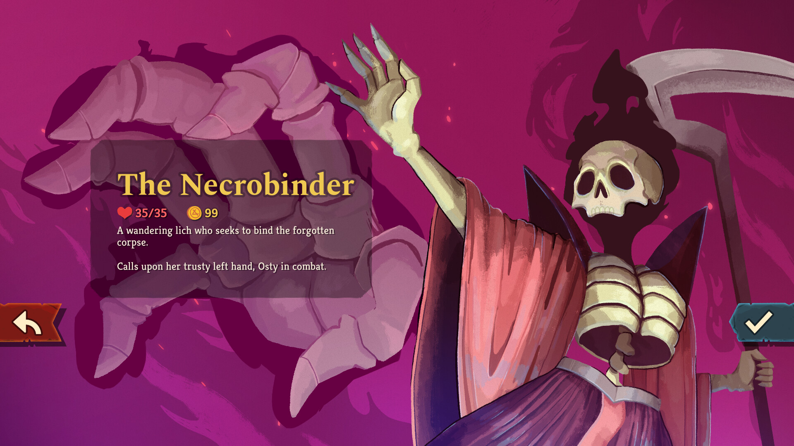
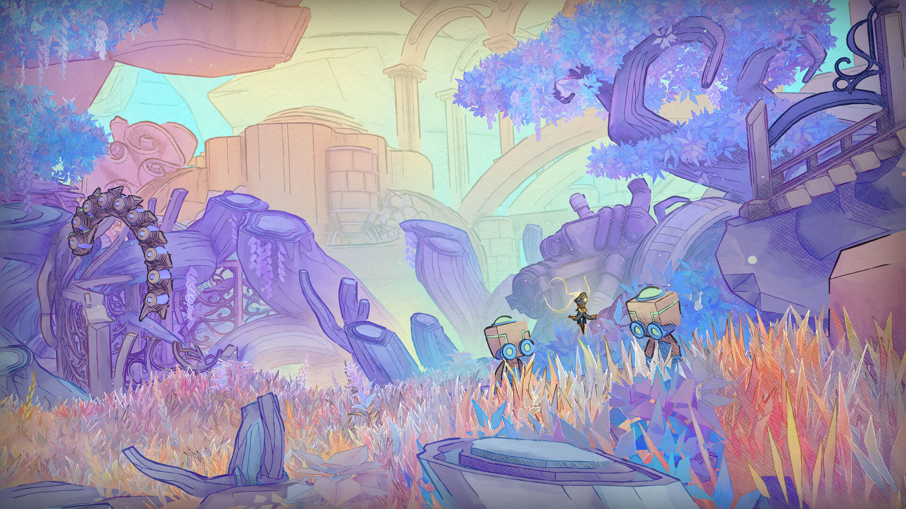
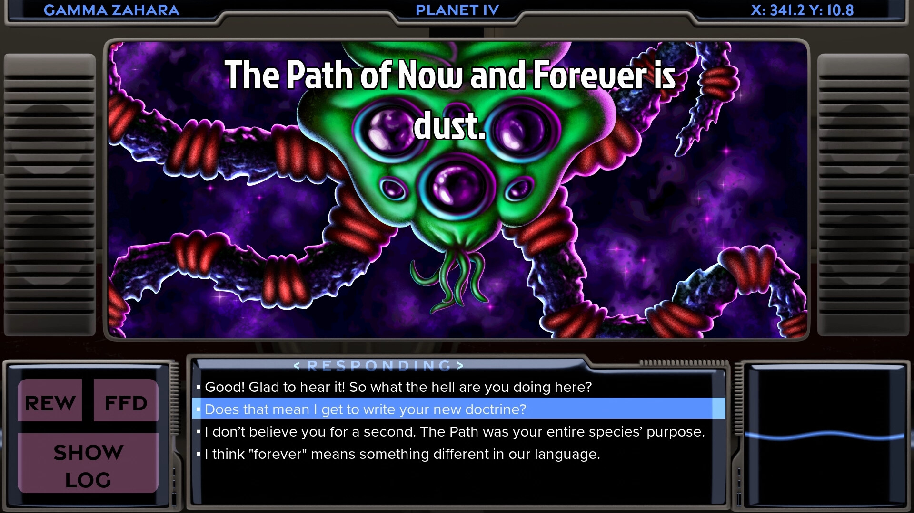
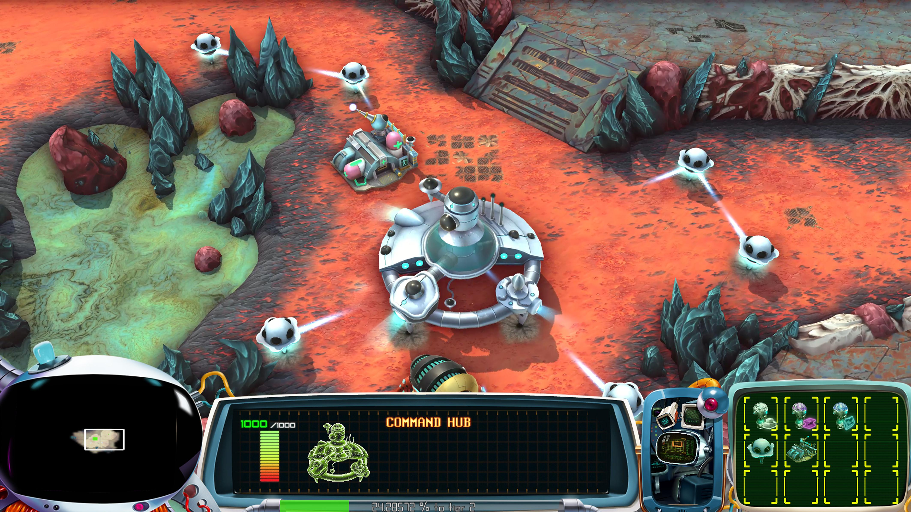
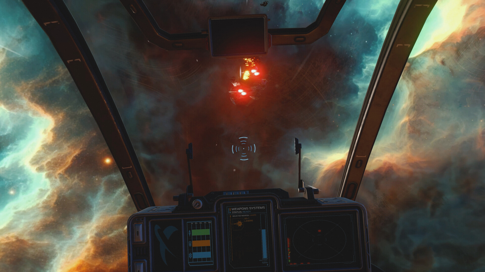
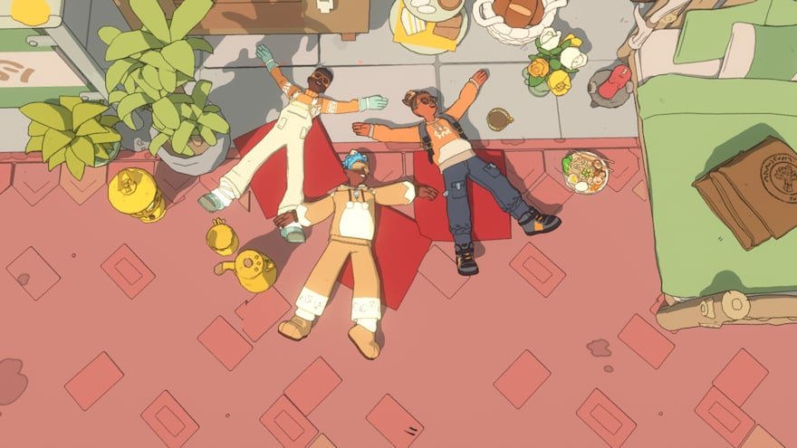
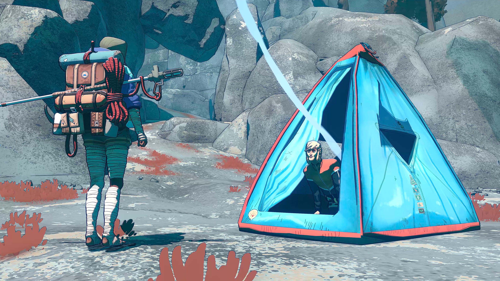
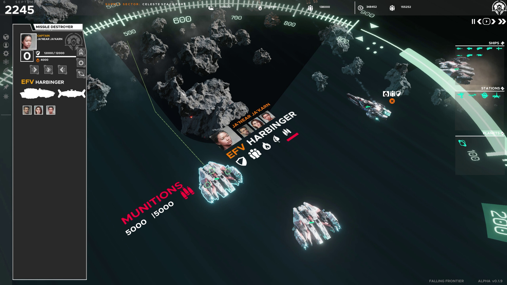

A systems-first look at upcoming space and sci-fi strategy titles that inspire how we think about RTS design at Redshift Labs.
1. Slay the Spire 2
The genre-defining titan is back with a vengeance. Forget everything you knew about the Spire; the sequel introduces the Necrobinder, a lich who manages a permanent summon (a giant skeletal hand named Osty) that fundamentally changes how you tank and trade. With the new "Doom" mechanic which executes enemies once their HP drops below your Doom stacks—the strategic ceiling has been blown wide open. It’s faster, meaner, and optimized on the Godot engine for frame-perfect card slinging.

🔗 Source: GamesRadar
2. Mio: Memories in Orbit
A sci-fi metroidvania adventure aboard a derelict spaceship from French indie dev Douze Dixièmes.

🔗 Source: Steam Page
3. Free Stars: Children of Infinity
The definitive successor to the legendary Star Control legacy. Children of Infinity is an open-universe strategy sandbox that masterfully bridges deep-space diplomacy with high-octane tactical combat. Built on the Godot engine, it’s a lean, modern evolution of the "Grand Space Opera" that prioritizes player agency and emergent galactic scale.

🔗 Source: Free Stars: Children of Infinity (Wikipedia)
4. Space Tales
A retro-futuristic real-time strategy inspired by classic sci-fi themes, coming to Steam Early Access in 2026 — a fresh strategy experience from an indie team with roots in They Are Billions.

🔗 Source: Space Tales Steam announcement
5. Remnant Protocol
An indie space combat and strategy hybrid involving dogfights, ship building, tech research, and tactical decisions — launching March 12, 2026.

🔗 Source: Remnant Protocol release & gameplay details (PC Gamer)
6. Spirit Crossing
A social exploration indie that blends cooperative gameplay with evolving environments — a sci-fi touch to the indie adventure side of things.

🔗 Source: Space/Sci-Fi 2026 roundup (SPACE)
7. Cairn
A survival-oriented indie climb/adventure — not strictly sci-fi, but with speculative world themes and strong ambient design.

🔗 Source: Steam indie community highlights (Reddit)
8. Battlestar Galactica: Scattered Hopes
While not pure RTS, this tactical roguelite set in the Battlestar Galactica universe blends fleet decisions and randomized strategy events in space.

🔗 Source: Space/Sci-Fi games list (SPACE)
9. Planet of Lana II: Children of the Leaf
A narrative sci-fi adventure combining environmental storytelling with robotic companions — from indie-driven team Wishfully.

🔗 Source: Planet of Lana II preview (CreativeBloq)
10. Falling Frontier
A hard sci-fi real-time strategy game set in a realistic solar system with Newtonian physics. Command fleets, manage logistics across vast distances, and engage in tactical space warfare with orbital mechanics that matter. A deeply strategic experience for RTS veterans.

🔗 Source: Falling Frontier Announcement
Wrapping Up
2026 marks a major shift for strategy indies as they move beyond "cozy" pixel art toward high-fidelity, high-stakes experiences. By leveraging modern tools like the Godot Engine, titles like Slay the Spire 2 and Free Stars are delivering the performance and moddability once reserved for AAA giants. Whether you're a fan of traditional RTS or innovative hybrids, the indie scene is officially the new frontline for strategy innovation.
Spread the Word
Share this article with your fellow strategy fans!
Or follow us on Bluesky for updates.